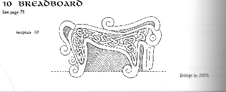
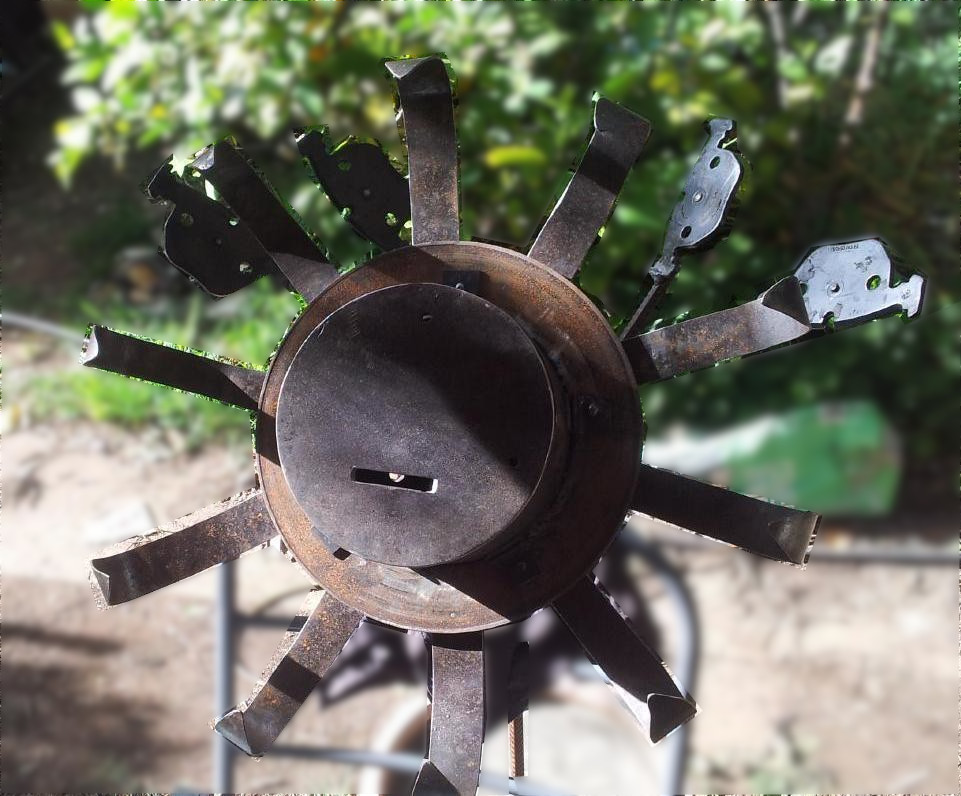

Metalwork. Systems. Tools.
This page features some early experiments in metalwork, focusing on form, reuse of materials, and structural intuition. A number of these were produced for community/church use (repairs, fixtures, and small functional items). Some are discussed in greater detail under specific projects.Barettes
- -
- 
Penannular brooches
-
Split Cross
-
Semilunar knife inspired by the Pictish Beast depicted in the lineart drawing which was lifted from a book on scroll-saw projects.
- -
- 
Paschal Candle Holder
-
Donation Box - inspired by "Little Weed", from "Bill and Ben". Formed from 1/8" steel plate, strip, 1/2" rebar and brake pads and rotors. One rotor forms the base and counter-weight and is buried in concrete in a large old flower-pot that had cracked and was no longer serviceable.
-